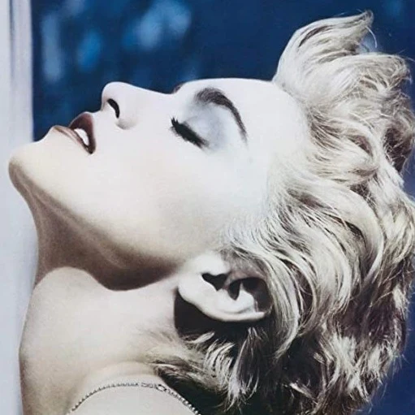

Click on the artists' names to see their instagram pages.

Bon Jovi
Bon Jovi is an American rock band that formed in 1983 in New Jersey. The band currently consists of Bon Jovi, David Bryan, Tico Torres, Phil X, and Hugh McDonald.

Madonna
Madonna is a singer know as the "Queen of Pop" and started her music career in 1983.
Michael Jackson
Michael Jackson, known as the "King of Pop" was one of the most significant culural icons of the 1980s.

Queen
Queen is a British rock band that formed in London. The members are Freddie Mercury, Brian May, Roger Taylor, and John Deacon.
Tom Petty
Tom Petty was an American musician and was the leader of the rock bands Tom Petty, the Heartbreakers, and Mudcrutch. He had many hit records as a solo artist as well.
Wham!
Wham! was an English pop duo formed in 1981 and consisted of George Michael and Andrew Ridgeley.

Hall & Oates
Daryl Hall and John Oates are an American pop, rock, and R&B duo formed in 1970. Hall is the lead vocalist while Oates plays the electric guitar and does backing vocals.

AC/DC
AC/DC is an Austrailian rock band formed in 1973. The current members include Agnus Young, Cliff Williams, Phil Rudd, Stevie Young, and Brian Johnson
Def Leppard
Def Leppard is a rock band that consists of Rick Savage, Joe Elliot, Rick Allen, Phil Collen, and Vivian Campbell.